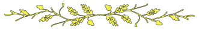

Simetra did not know how many hours had passed, but she must have been unconscious for quite some time when she slowly fought to open her eyes again. She felt a lot of pain, and could barely move her wings. Any attempt caused a strange, crunching noise, as if the bones were broken after the fall. It was dark around her — how did she get here? Tracing back the last memory, she remembered being in the air with the fairy, being swept away by a powerful gust of magic force, and then tumbling down helplessly towards this dead and deadly forest, wings frozen.
It was still cold, and after her eyes had taken in the darkness, she realized she was in the forest, lying on the hard ground. She slowly sat up, and took in her surroundings. Not far away, the fairy was lying on the ground, apparently still unconscious, but easy to make out due to the green glow still visible around her. So that fragile creature had also made it, somehow — but wasn’t there supposed to be a green, magic cushion to stop their fall? There was no time to think about this now. She had to wake the fairy — there was not telling if they were in danger, and what happened to her friend after the healing. She could also hear the sounds of the ‘road builders’ coming closer, though they were still far away…
Taking all her strength together, she approached the fairy, hopping step by step over the ground, more like a rabbit than like a bird. Twigs cracked below her, and finally, she was close, and could feel the magic emanating from the fairy. She carefully tugged at her with her beak, finally poking at her white cheek, until she heard a moaning noise. Quietly, she said: ‘Wake up — you must wake up!’ Finally, the fairy moved, turning on her back. Blinking her eyes, she looked at Simetra — after a short moment of surprise, she opened her eyes completely, and sat up. Holding her side, she started to unfold her wings in visible pain. Her green light was flickering, but she grasped a leathery pouch from her belt, opened it, and extracted some of the glowing, magic dust. Quietly, she brought the hand to her nose, and breathed in — the flickering light stabilized, the pain vanished from her face, and her wings finally unfolded in full glory.
Simetra watched in awe and silence. Finally, the fairy put her hand into the small pouch again, and reached out to Simetra, opening the hand carefully. The bird leaned over, and started to pick at the durst with her beak, carefully taking it in. Her pain vanished in an instant, her wings seemed to move without any obstructions again; as if the broken bones had been mended. She could also see her feathers changing colour: They had been a deep, dark brown with some traces of lighter brown before, but now they became a slightly brighter shade, and there was a light glow emanating from her. She also felt a deep warmth in her entire body.
The fairy looked at her slightly astonished. ‘So you are a magical creature after all, huh?’, she quietly whispered. ‘I should have known after you started to talk… You probably do not know why all of this is happening, but we’ll find out together!’
After these words, the sounds from the ‘road builders’, which had constantly come closer, suddenly stopped. A strange laughter could be heard, and it was shockingly close-by. The fairy flinched — she knew that voice, that laughter, and she started shivering in fear. Simetra automatically moved closer — she had finally taken in all the dust, and she pointed upwards with her beak, silently indicating that they might flee by rising above the treetops. But the fairy shook her head — this must be a foe against which flying away would not help.

He had finally found the final, missing ingredient — he needed something to connect their magic together. The green grass of the clearing could play that role: It was created by the fairy, but it moved when he moved, and the muddy spot was the part transfusing his actions and that magic. He grabbed the grass, and touched the sign with it, and all of a sudden, it started moving at breathtaking speed. The black figure which had been approaching was immediately out of sight, as the plant in shape of a sign rose up into the air, whirled around and enlarged itself, such that he could comfortably sit on it. Then, it sped away in a seemingly random direction, and he could hear the wild grumbling noise of the ‘road builders’ destroying the clearing — and a barbaric roar which must have come from the black-clad figure. He could faintly see a shadow moving in the direction he had left in, becoming smaller and smaller. And then the sign started to fly in a large circle, coming closer again to the origin of their flight.
He was starting to fear that this would be his end — why would the sign ever go back, when he was making his safe escape? He tugged at the sign, crying out for it to stop, but the sign ignored his plea — and finally, he fell silent to not alert the black figure about his presence. Then, the sign started to descend, getting closer and closer to the treetops, before slowing down, and stopping mid-air. He took in his surroundings: The black figure was nowhere to be seen, but he could hear noises slowly moving away, tracing the path he had left in. So it seems the black figure could trace his movements. Could it maybe sniff out magic, like a dog could follow scents?
In any case, this should buy him some time — it seemed the figure was by far not moving as fast as the sign had flown initially. Suddenly, the floating sign began to descend through the treetops, and the darkness of the forest engulfed him. But he could see two shimmering lights close to the ground, and he was moving closer and closer to them…
Simetra and the fairy stood there in silence, quietly listening for any sound. With movements of her hands, the fairy shrank her shimmering aura, until it was completely hidden — while Simetra could not follow, the fairy touched her with one hand, and the glowing also went away. In their silence, they could make out further laughter, getting louder and louder, then finally, after a moment of silence, a loud roar which seemed to belong to the same voice, and new activity by the ‘road builders’, seemingly working in a frenzy. The fairy shivered more, and Simetra was unable to calm her.
Slowly, the noises moved away — no new laughter or roaring was heard, and the strange sounds created by the ‘road builders’ seemed to move farther and farther away. Had they been saved?
They waited for a few more minutes, which seemed to last for an eternity, until the fairy calmed down and unsealed their auras again. She breathed out with relief, and Simetra deduced that the dark presence must have gone away far enough to not be noticeable to her anymore.
Then, all of a sudden, some leaves and twigs began to rain down from above — as usual, the forest itself was completely silent, so this must have been caused by somebody breaking through the treetops. The fairy, carrying Simetra on her shoulder, jumped back in surprise behind the next tree, hiding them both. The sight they would behold next was as strange and unexpected as it was relieving: Simetra’s friend descended on a strange, wooden plate, which had a wooden post on top and roots attached at the end of the post, as if it was a plant. But that did not matter — he was alive, and seemed well!
Simetra rose from the shoulder of the fairy, quickly approaching her friend, making for his shoulder instead. She was still silent, anxious even though the figure which made the nasty laughter should have gone by now — but no voice was needed to express their feelings, as they approached each other.
Meanwhile, the fairy stood in awe, slowly moving out from the shadow of the tree. Never had she beheld such a strange sight — was this really a human, working such strange magic?
While he was descending, he could see the two lights fleeing behind a tree — but only shortly after, one of the lights quickly started moving in his direction. It was Simetra! He had found her! He ignored her change in appearance, all this did not matter now: His friend was back, they were united again. She approached his shoulder, and he caressed her feathers, while she carefully poked at him with her beak greeting him in silence. Then, he could see that the green light was emanated by the fairy, who was still standing behind the tree, slowly moving in sight. She seemed astonished, if not a bit frightened — he waved at her, and as the sign increased in size, he hopped onto one side of the wooden post. The sign balanced itself again quickly, and he motioned at her to come and join him on this vessel into safety.
The fairy’s expression of surprise deepened even more, but then she seemed to calm down, shrug, and slowly approach, finally hopping onto the wooden sign. She was so light that he almost could not feel the change in weight. Wooden handles evolved on the sign, and they grabbed on — and as if this was the trigger, the floating sign started to ascend again, break through the treetops, and start to fly away at break-neck speed, carrying its three passengers towards their destination.